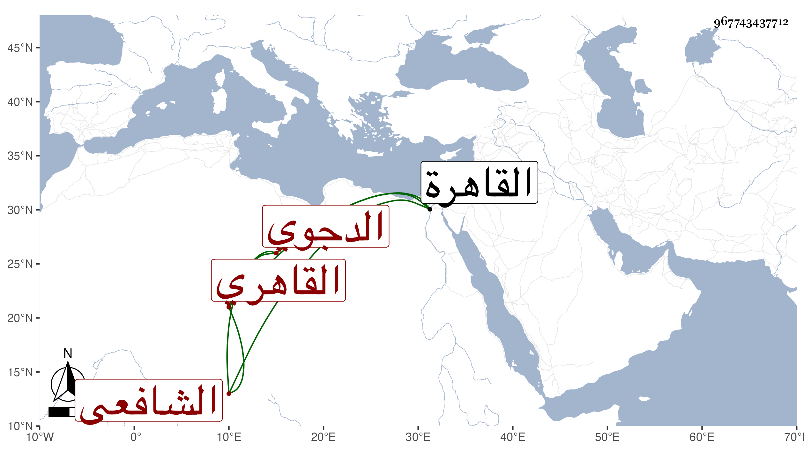

0902Sakhawi.DawLamic.ITO20230111-ara1.EIS1600.967743437712
Biography ID: 967743437712
393
محمد بن علي بن أحمد بن عمر بن علي بن مجاهد بن ربيعة بن فتوح البدر الدجوي الأصل القاهري الشافعي . نشأ بالقاهرة فحفظ القرآن والمنهاج وألفية النحو وغيرها واشتغل يسيرا وقرأ على المناوي في شرح البهجة وعلى البكري في الروضة وفي المباديء على الشمسين ابن العماد والأبناسي وكذا أخذ عن الخواص في العربية والعروض وغيرهما وحضر عند العلم البلقيني وكتب قليلا على ابن حجاج وتكسب بالشهادة وتخرج فيها وفي التوقيع بخاله غرس الدين الأمبيهي وباشر التوقيع بباب أبي الخير النحاس بل ناب في القضاء عن العلم فمن بعده مسئولا بذلك وعمل النقابة لابن حريز وتمول من ذلك كله وحج ، وكان شهما عالي الهمة بهي الهيئة ، عمل لغزا في سعادات كتبه عنه بلديه الزين الدجوي وهو المفيد لأكثر ترجمته . مات في رابع ذي القعدة سنة سبعين بعد تعلله مدة رحمه الله .
